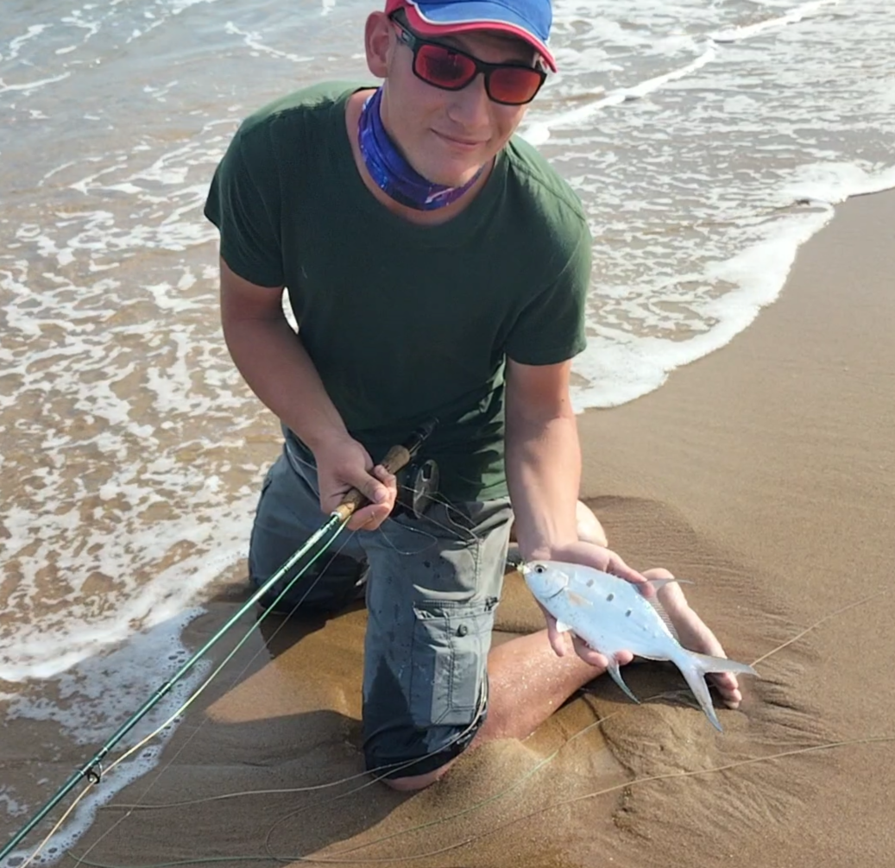

|

TJ JacobsEmail : tjnjacobs@gmail.comCell : +27 79 124 0676Facebook Account : TJ JacobsLinkedIn : TJ JacobsMy passion in life is nature, nature and nature. I am motivated by change, progress and accomplishments. If given the choice I would be wiring ECU managements and Fly fishing on flats for fish that don't exist. |
Skills and CompetenciesMarineI successfully obtained my Category B skippers, enabling me to pilot/captain a motorized vessel under 31ft through the surf zone and up to 40 nautical miles off shore. Within the course I completed First-aid training. This includes training in Stroke scenarios, Fatal bleeding wounds, emergency transmission, safety briefings and general precautions. BoatingI have been a deckhand on large vessels and work in a family-owned vessel storage company. With this I gained experience in fiberglass work, outboard engines and general rigging and maintenance on boats. FishingI grew up in the northern coast of South Africa. This means that fishing was a natural hobby in my family. In having the privilege of owning a vessel, I have been fortunate enough to have some of the worlds best anglers teaching me from a young age. I have vast experience in game fishing and I have attended many international, national, provincial and inter-club events. I have achieved national and provincial colors in game fishing and home colors for inter-club fishing events. People skillsI work with walk-in and mobile clients on a daily basis. I am fully able to work with clients in a professional manner. I can easily merge with team members and become a part of the working gears that run a business from the inside. Planning and eventsWithin my fishing and automotive background I have had the pleasure of planning, hosting and supporting numerous events. Most of these events are fishing related, this includes : bonanza fishing events, inter-club fishing, national fishing competitions and international comps too. Events like these take enormous amounts of focus, management, financial security and experienced executives. LogisticsWorking with different teams and maintaining clear communication during operations is like second nature to me. Transporting, picking-up and delivering items or vehicles have been a part of my daily routine in the automotive industry. EducationMechanicalI was raised in an automotive workshop. I can service vehicles, do maintenance on pretty much anything, fabricate parts for vehicles, weld different projects (Tig, MIG, ARC) and work a lathe. I plan on writing my trade test on Petrol and Diesel vehicles. I can wire engine managements (the vehicle's ECU) and fit Software Chips. High schoolRichards bay high school. 2017-2021. Full-Stack Web DevelopmentI am currently completing a course on web development and will be finished by the end of MayHere are some basic projects that I have createdBasic online flyfishing shopGitHub link : https://github.com/tjjacobskzn/Task5-CT2This is a online fly fishing shop that allows users to select and add items to a cart Matching Card GameGitHub link : https://github.com/tjjacobskzn/Task5-CT2This is a game that allows the user to compare cards until they match ReferenceRichards Bay Highschool : https://hsrichardsbaai.co.za/Here are a few links to our family-owned businessesRE RacingFacebook : https://www.facebook.com/reracingrichardsbay/Website : https://re-racing.co.za/FishnGo Boat StorageFacebook : https://www.facebook.com/fishngo.co.za/Website : https://fishngo.co.za/More about MeHobbiesMy go-to hobby is fly fishing. Nothing makes me happier than being on a flat with small waves crashing peacefully and having my rod in hand. Another hobby I have is building things with my hands. I take interest in wood working and I build my own split cane rods. I like to weld parts and machine/fabricate precision parts on a lathe. I enjoy guiding, deckhand and skipper work. Strong PointsHonestyI trust the people I decide to surround myself with and stay true to them to the best of my capabilities Work ethicWithout a doubt in my heart I will be one of the hardest workers you will ever meet. I execute my work responsibilities to the best of my capabilities and go the extra mile to satisfy expectations |